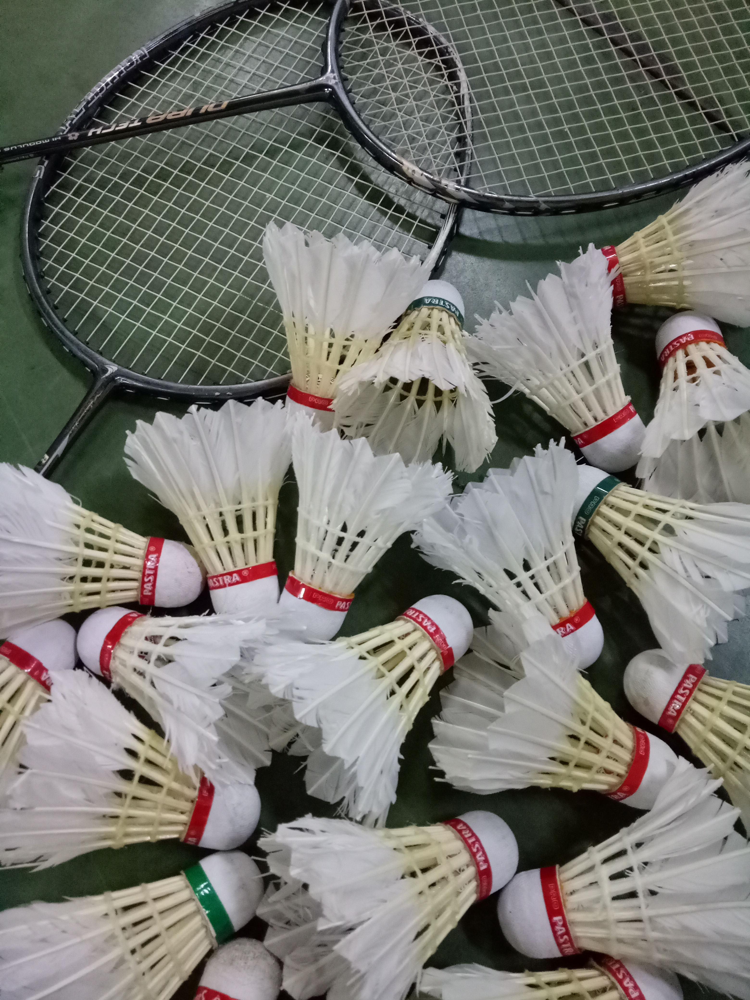
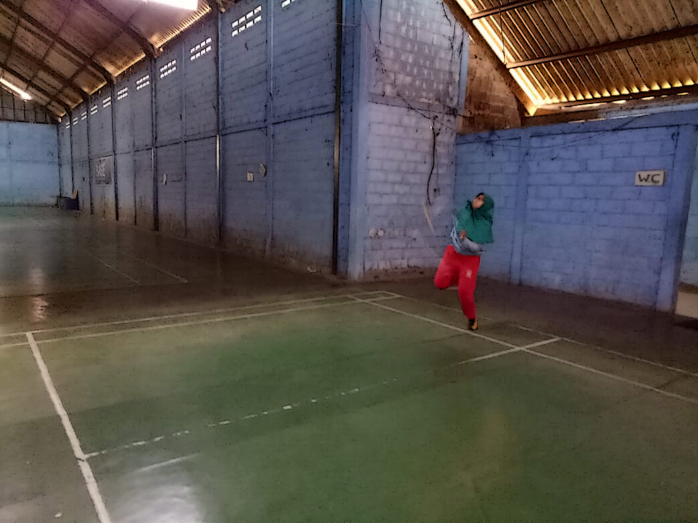
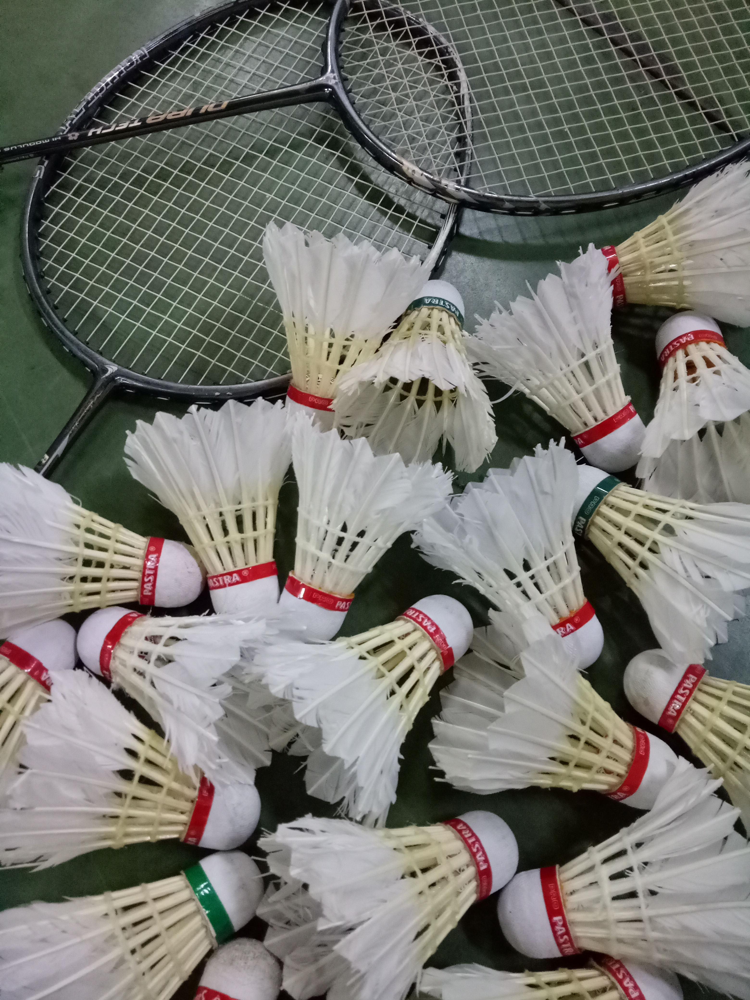
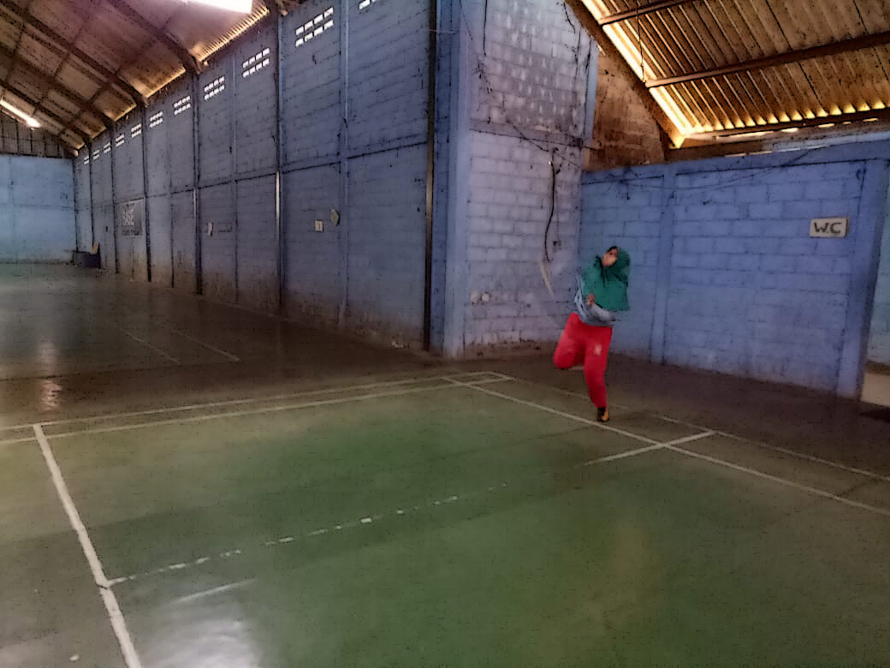
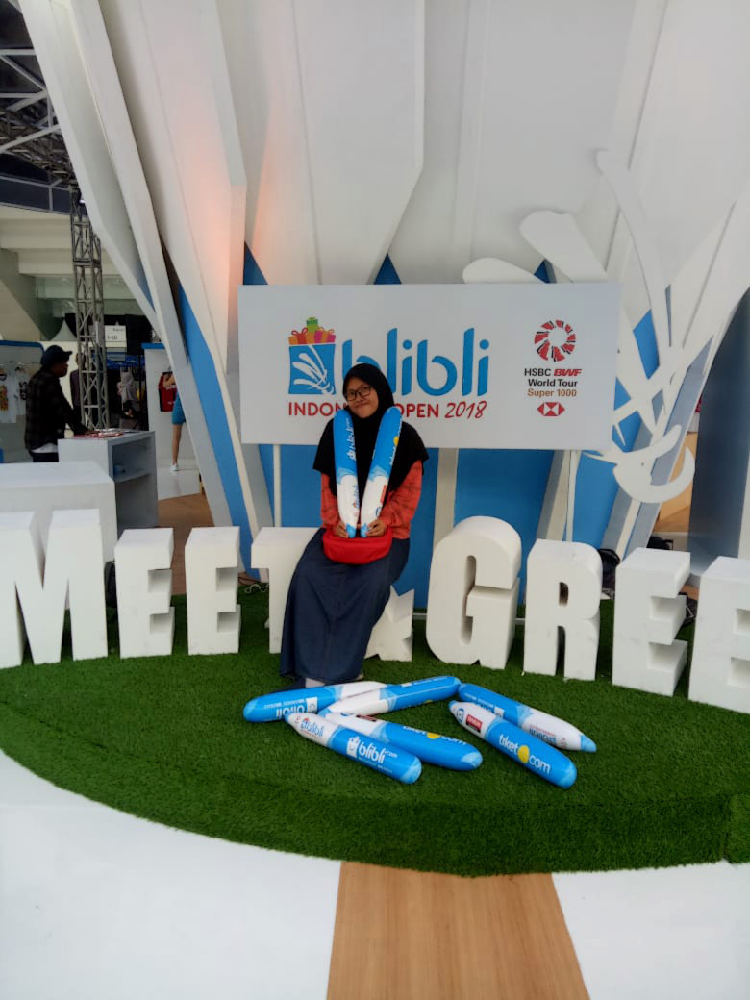
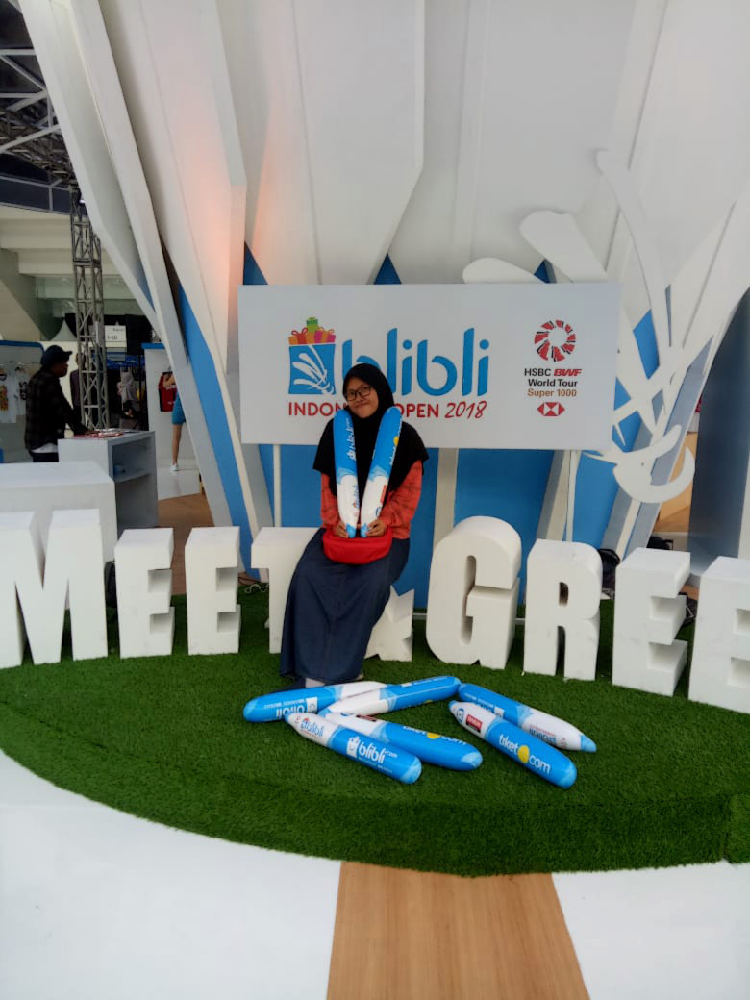

As you've known, he is Indonesian badminton athlete that has many fans, especially from "Kaum Hawa"
Unfortunately, I've never met him HUHUHU :'( I hope, I can meet with him wherever and whenever it is at unexpected times ASAP AAMIIN AAMIIN.
Rn, I can only look at him through photos or 3D Picture, like the picture below. So sad:(
But, I've seen some of my idol, when I watched the Blibli Indonesia Open 2018 at Istora Senayan.


  
 

 
